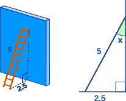
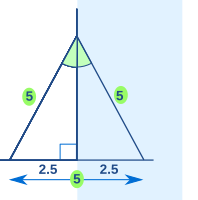
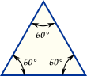
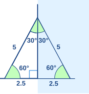
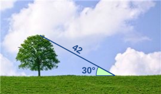
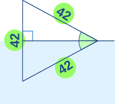

Solving Triangles by Reflection

|
A 5ft ladder leans against a wall as shown. What is the angle between the ladder and the wall? |
This is surprisingly easy to solve by using Reflection

Here is the triangle with its reflection
Together they make an equilateral triangle (all sides equal).
 |
The angles in an equilateral triangle are all 60° |

So the angle between the ladder and the wall is half of 60°
= 30°
Finding Length
We can use the same idea to find an unknown length.

Alex has a laser that measures distance.
By standing some distance from the tree Alex measures 42m to the top of the tree at an angle of 30°.
What is the height of the tree?
Here is the triangle and its reflection:

Once again the triangle and its reflection make an equilateral triangle.
So, we know the height of the tree must be half of 42m
= 21m
So keep an eye out for when reflection may help with a solution!